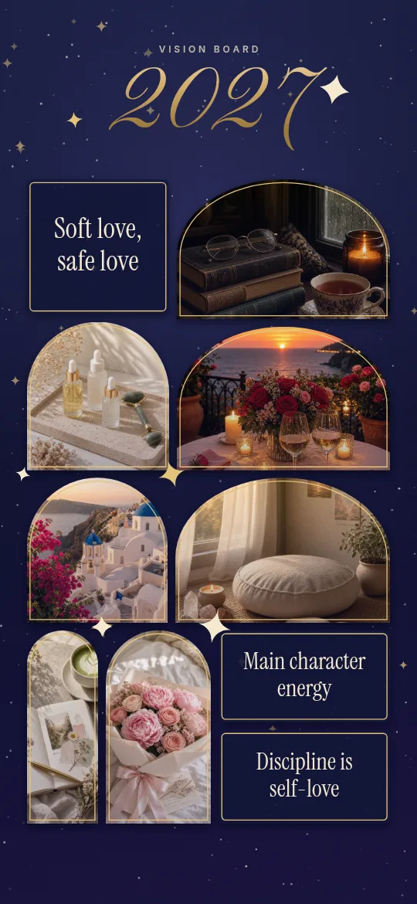
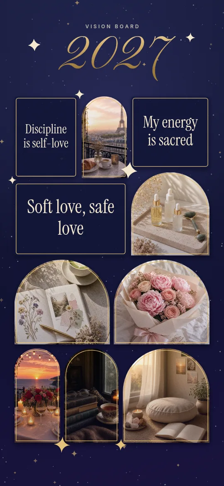

2027 AESTHETIC · CELESTIAL
A celestial vision board for your 2027 lock screen
Midnight blue, scattered gold stars and arched window frames. Celestial is the look for manifesting, moon rituals and a calmer, more intentional 2027.



The Celestial look in one line
Deep navy and indigo with champagne-gold lines, starlight and a script title.
What to put on it
- A peaceful corner for your morning ritual
- A love you are calling in
- Journals and books for growth
- A bath, candles and rest for self-care
- A sunset view you want to wake up to
In Glowboard you just tap the goals you want (travel, money, love, style and more) and the matching photos and affirmations are added for you. You can also add your own photos. They stay on your phone.
Tips for a board you will actually look at
- Write intentions in the present tense: “I am at peace”.
- Choose a word of the year like “alignment” or “faith”.
- Calm, warm photos glow beautifully against the night sky.
- “The universe has my back”
- “I am aligned with my highest self”
- “Soft love, safe love”
- “My energy is sacred”
- “Everything is working out for me”
How to set it as your lock screen
iPhone: tap Save image (or long-press and choose “Save to Photos”). Open Photos, tap Share, then Use as Wallpaper. Android: open the image in Gallery or Google Photos, tap ⋮, then Set as wallpaper, then Lock screen.
FAQ
Is Celestial free?
Celestial is a Pro look. You can preview it with your goals for free.
Is it good for manifesting?
Yes. Pair it with present-tense affirmations. See our manifestation lock screen guide.
More 2027 looks


Glowboard is a free vision board wallpaper maker. There is no sign-up, and your photos never leave your device.